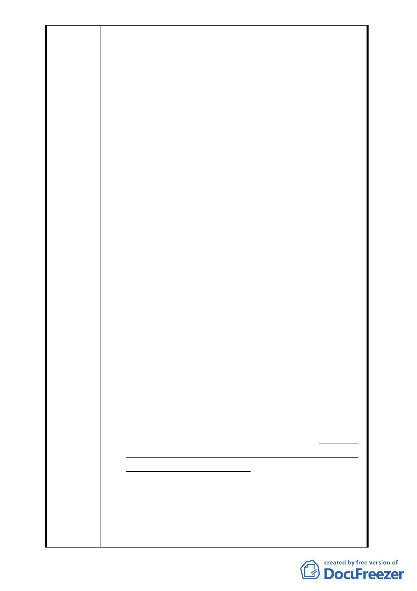

版，其中第拾伍之財務計畫，記載本更新案之工程費用
及相關費用(含補貼地主之費用)達新台幣61億元，合康
公司雖已獲台灣土地銀行同意，辦理建築融資約23億
元，但依業界以信託方式興建房屋之作，建設公司應將
一定金額之「自備款項」一次存入「信託專戶」，供建
經公司於依工程進度撥款時，比例撥給營建承攬人。本
件雖非房屋預售案，但因辦理都市更新之土地不得提供
設定抵押權予銀行，故都市更新之實施者，其財力是否
健全乃係地主之風險所在，且更甚於一般之房屋預售
業。「台北市政府徵求參與促進都市再生2010年台北好
好看開發計畫案」第陸條第五項審查機制，即列明「財
務計畫」為執行能力之重要考量事項。
(六)陳情人於今(98)年初之住戶大會，一再要求合康公司就
此提出說明，合康公司一再搪塞，推說財務絕無問題，
又推說該公司屬「寶佳集團」，又允諾由該集團之林陳
海董事長提出連帶保證書，同意若本建案因合康公司資
力不足而停工時，渠同意提供資金續建云云 (按連帶保
證書僅係債權契約，如林陳海董事長屆時不履行，難不
成由地主支付龐大之裁判費及律師費對渠起訴請求；且
即使勝訴確定，林陳海董事長是否有財產可供執行，更
在未定之天。屆時本基地已成爛尾樓)，屆時，合康公司
勢要求地主同意以其土地提供設定予第三人，以取得資
金續建，顯見合康公司確無資力可言，計劃邊蓋邊湊錢。
這是適格的實施者嗎？
(七)按都市更新條例第10條第1項規定：「經劃定應實施更
新之地區，其土地及合法建築物所有權人得就主管機關
劃定之更新單元，或依所定更新單元劃定基準自行劃定
更新單元，舉辦公聽會，擬具事業概要，連同公聽會紀
錄，申請當地直轄市、縣(市)主管機關核准，自行組織
更新團體實施該地區之都市更新事業，或委託都市更新
事業機構為實施者實施之。」查本都更案高達五分之二
不同意由合康擔任實施者之地主已另組都市更新團
體，合康為恐原先同意之地主投入該都市更新團體，竟
同意本都更案由地主自行選擇「自建」或「由合康公司
擔任實施者」二種方式，此舉已嚴重違背前述條文之規
定，更使本件更新案錯綜複雜，權利義務難以劃分。
- 32 -